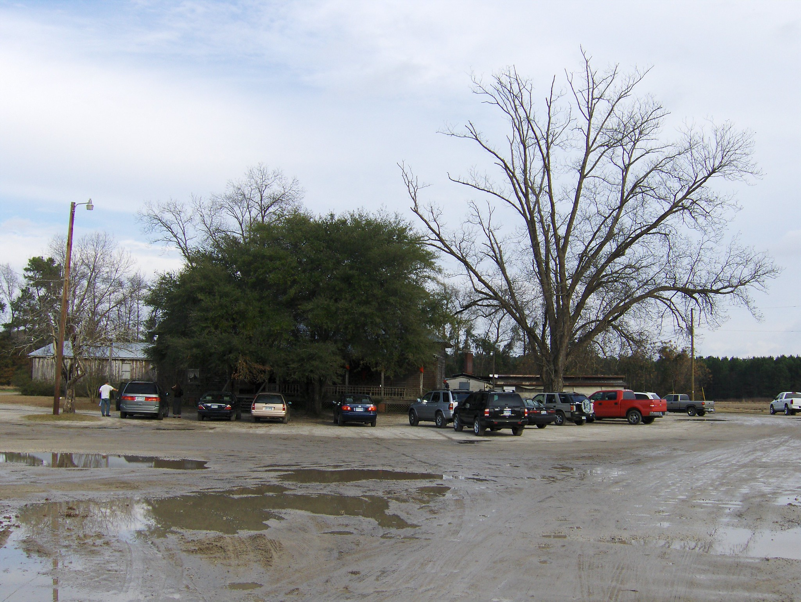

a place · SCSweatman's Bar-B-Que
also: Sweatman's BBQ · Sweatman's

A whole-hog barbecue house in an old farmhouse on Eutaw Road outside Holly Hill, in Orangeburg County, the mustard belt of the Midlands. Harold 'Bub' Sweatman and his wife Margie opened it in 1977 and it has served two days a week since: Friday and Saturday, pulled pork from whole hogs, ribs, hash over rice — hash being the Midlands' stew of pork and onion — and a spicy-sweet mustard sauce, with pork skins when the hogs give them. The open block pits became gas-and-wood smokers; the buffet that made the name ended after the pandemic; the family sold in 2011, and new owners took over in 2026.
When they are open
Friday and Saturday, 11:30 to 8.
open closed not published · Cited · web-destination-bbq-sweatmans · checked 2026-09-16 · why so many close Sunday
The story Cited · web-destination-bbq-sweatmans
Bub and Margie Sweatman first opened a small barbecue restaurant in Holly Hill in 1959. It did not last, and for years they cooked hogs only for friends and family. In 1977 they bought an old farmhouse in Eutawville, a rural community close to Holly Hill, and opened Sweatman's Bar-B-Que in its rooms; it has not closed since. The sauce belongs to a shared story: Joseph 'Big Joe' Bessinger, who opened the Holly Hill Café in 1939, worked out a mustard-based sauce with the Sweatman family — both families of German descent — and the Bessingers came to call theirs the Golden Secret. When Rien Fertel came for the Southern Foodways Alliance in June 2012 he recorded the cook Douglas Oliver, who said that whatever the economy did, 'everybody going to eat barbecue, especially if it's good; they're going to eat what we got, they'll be back.' Margie Sweatman died in 2003 and Bub in 2005; the family ran the house until 2011, when close family friends Lynn and Mark Behr bought it. In the Behr years the open concrete-block whole-hog pits gave way to Southern Pride smokers, and after COVID-19 the buffet ended. In 2026 the Patel family took over.
How it is done Cited · web-destination-bbq-sweatmans
Whole hogs, oak- and hickory-smoked, pulled and dressed with the house mustard sauce, with vinegar and red sauces alongside. The plate is pork or ribs with hash and rice and sides; pork skins are fried when there are skins; banana pudding ends it. The old pits were open beds of concrete block over wood coals; the hogs now cook in Southern Pride smokers — Tradition holds — cabinet cookers fired by gas with wood for smoke.
Today Cited · web-sweatmans-hours
Open Friday and Saturday, 11:30 a.m. to 8 p.m., at 1427 Eutaw Road, Holly Hill, per the restaurant's site on September 15, 2026; Destination BBQ's 2026 page lists Thursday to Sunday instead. New owners since 2026. Check before driving.
Facts
| state | SC |
|---|---|
| status | open |
| founded | 1977 |
| fuel | mixed |
| styles | South Carolina mustard barbecue |
| region | The South Carolina Midlands, South Carolina |
| address | 1427 Eutaw Rd, Holly Hill, SC, 29059 · Orangeburg County Cited · web-sweatmans-hours |
| where | 33.3619, -80.3821 (street) · OpenStreetMap · open in maps Harvested · osm |
| links | Sweatman's BBQ — official · Sweatman's Bar-B-Que — Southern Foodways Alliance interview (2012) |
| confidence | medium · needs verification · updated 2026-09-16 |
Near here
Crow-flies miles; the road is always longer. The finder sorts every pit in both states from where you are.
- 25.7 mi — McCabe's Bar-B-Q Manning 🐖 Whole hog 🔥 Cooks over wood 💵 Cash only
- 28 mi — Dukes Bar-B-Que Orangeburg 🍽 Buffet 🍚 Serves hash 💵 Cash only
- 34.4 mi — Cooper's Country Store Salters 🐖 Whole hog 🔥 Cooks over wood 🍚 Serves hash
- 39.8 mi — Brown's Bar-B-Que Kingstree 🐖 Whole hog 🍽 Buffet 🍚 Serves hash
- 40.6 mi — Big T Bar-B-Q Gadsden ✊🏾 Black-owned 🔥 Cooks over wood 🍚 Serves hash
Its kin
Who points back
Sources
- Sweatman's Bar-B-Que — Douglas Oliver, interviewed by Rien Fertel, June 4, 2012 · link
- Southern Foodways Alliance oral history collection — barbecue projects (North Carolina, South Carolina) · link
- Sweatman's Bar-B-Que Restaurant near Holly Hill, SC · link
- Hours & Location — Sweatman's BBQ · link
- Melvin's Legendary Bar-B-Q — David Bessinger, interviewed by Rien Fertel, June 26, 2012 · link
- OpenStreetMap — places tagged cuisine=barbecue in North Carolina and South Carolina · link
- Flickr — individually licensed photographs · link
Where it came from: Cited a source we name · Harvested pulled from an open dataset · Tradition what the tradition says, hedged · Inference this project's reasoning · Field somebody stood there. This record as JSON.